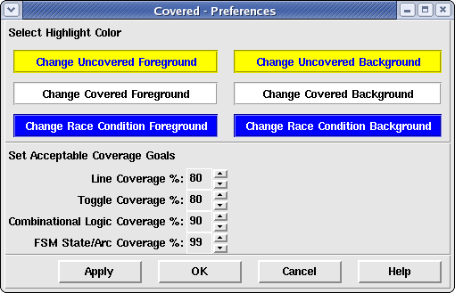
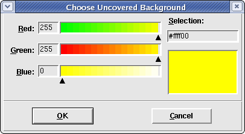

The preferences window allows the user to adjust the view of some of the GUI elements for the purpose of more easily analyzing coverage information for a specific user. Figure 1 shows the preferences window that is created when the user selects the Tools > Preferences... menu option from the main window.
Figure 1. The Preferences Window
This frame contains six buttons that affect the foreground and background colors used to highlight code in the Coverage File Viewer portion of the main window. The buttons on the left change the foreground color while the buttons the right change the background colors. The currently selected foreground/background colors are displayed on the buttons themselves to allow the user to see the selections prior to committing to them by clicking the OK button at the bottom of the Preferences window.
Allows the user to specify the foreground color to use for logic that is not fully covered in the logic window. Figure 2. shows what the color selection window looks like.
Allows the user to specify the background color to use for logic that is not fully covered in the logic window. To view highlighted text, this color value should not be set to the same value as the "Uncovered Foreground" color. Figure 2. shows what the color selection window looks like.
Allows the user to specify the foreground color to use for logic that is fully covered in the logic window. Figure 2. shows what the color selection window looks like.
Allows the user to specify the background color to use for logic that is fully covered in the logic window. To view highlighted text, this color value should not be set to the same value as the "Covered Foreground" color. Additionally, to help distinguish covered logic from uncovered logic (when both information is viewed together), it is important that this color be different from the "Uncovered Background" color.
Allows the user to specify the foreground color to use for logic that was found to contain a potential race condition and was, therefore, eliminated from coverage consideration by Covered. Figure 2. shows what the color selection window looks like.
Allows the user to specify the background color to use for logic that was found to contain a potential race condition and was, therefore, eliminated from coverage consideration by Covered. To view highlighted text, this color value should not be set to the same value as the "Race Condition Foreground" color. Additionally, to help distinguish this type of logic from covered and uncovered logic (when either of these pieces of information are viewed together), it is important that this color be different from the other background colors.
Figure 2. The Color Selection Dialog Box
To adjust the color, simply move the arrows beneath the red, green, and/or blue color spectrums until the desired combined color (distinguished in the window in the lower right-hand corner of the window) is displayed. The user may also specify the 8-bit color value for red, green, and/or blue in the entry field to the left of each color spectrum. Finally, the user may specify the 6-digit hexidecimal color value in the entry field on the right-hand side of the window. Whenever the color is modified by using any of these controls, all of the other controls are changed to reflect the current color selected.
This frame contains four spinner boxes that contains values between 0 and 100. These values correspond to a coverage percentage for each coverage metric that the user deems to be "good enough". These values are used by the Summary Window to help visually identify modules/instances that are meeting or exceeding these goals and which modules are not meeting these goals. If a coverage percentage for a module/instance is less than this value, the module is colored red. If the coverage percentage is greater than or equal to this value, the module/instance is colored yellow (or green which indicates that the module/instance reached 100% coverage for a given metric).
To increase the specified percentage value, simply click on the
 to the right of the percentage until
the desired value is displayed. To decrease the specified percentage value, simply
click on the to the right of the
percentage until the desired value is displayed.
to the right of the percentage until
the desired value is displayed. To decrease the specified percentage value, simply
click on the to the right of the
percentage until the desired value is displayed.
Sets the coverage goal of line coverage to the specified percentage to the right. If line coverage for a given module/instance meets or exceeds this percentage value, it will be displayed yellow in the summary window.
Sets the coverage goal of toggle coverage to the specified percentage to the right. If toggle coverage for a given module/instance meets or exceeds this percentage value, it will be displayed yellow in the summary window.
Sets the coverage goal of combinational coverage to the specified percentage to the right. If combinational logic coverage for a given module/instance meets or exceeds this percentage value, it will be displayed yellow in the summary window.
Sets the coverage goal of FSM state/arc coverage to the specified percentage to the right. If FSM state/arc coverage for a given module/instance meets or exceeds this percentage value, it will be displayed yellow in the summary window.
User preferences are loaded from the ".coveredrc" file that is searched for in the following order:
If user preferences are changed in this window and the OK button is pressed, the settings are immediately saved back to a configuration file and the GUI is immediately updated to reflect the new user changes. If the Cancel button is pressed, all changes are thrown away and the configuration file remains unchanged. The location of the stored configuration file depends on which configuration file location was initially loaded. The following table describes this correlation.
Table 1. Location of Written .coveredrc File According to the Location of Read .coveredrc File
| Loaded config file location | Stored config file location |
| Current directory | Current directory |
| Home directory | Home directory |
| Install directory | Current directory |
| None found | Current directory |
Clicking on the Apply button will cause the currently selected preference options to be immediately updated in Covered but will not update the preference option values in the .coveredrc file. This has the effect of changing the preferences for the current application only. Clicking on this button will not close the Preferences window.
Clicking on the OK button will cause the currently selected preference options to be immediately updated in Covered and will update the .coveredrc file with the new values. This also causes the Preferences window to close.
Clicking on the Cancel button will cause the the Preferences window to close without updating Covered with the currently selected values and without updating the .coveredrc file.
Clicking on the Help button will cause this help page to be displayed in a browser.